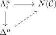
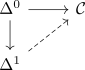
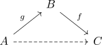

nerve of a category as infinity category
Proposition
Let $\mathcal{C}$ be a category, $N$ the nerve functor Then $N(\mathcal{C})$ is an infinity category
Proof
using the nerve homotopy cat adjunction there exists a bijection between extension problems

(cf. bijection of extension problems for an adjunction)
$n \geq 3$
then it follows that by homotopy category of a horn the inclusion
\begin{align*}
h(\Lambda_1^2) \cong h(\Delta^2)
\end{align*}
is an isomorphism (here for $n = 2$ we get the inner horn $\Lambda_1^2$
Thus the lifting problem is solvable trivially
$n = 1$
then it follows that the identity morphism suffices for

$n = 2$
Then we have to solve the problem

Here the composition $g \circ f$ is the unique solution.